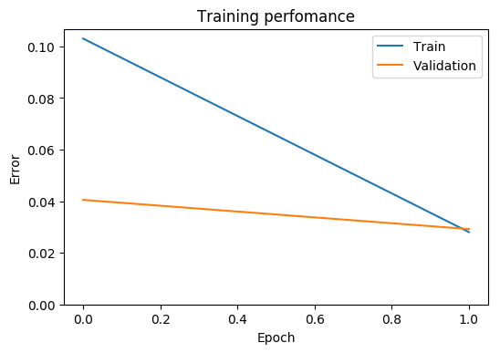

Python 2.7.13 (default, Jan 13 2017, 10:15:16)
Type "copyright", "credits" or "license" for more information.
IPython 5.3.0 -- An enhanced Interactive Python.
? -> Introduction and overview of IPython's features.
%quickref -> Quick reference.
help -> Python's own help system.
object? -> Details about 'object', use 'object??' for extra details.
In [1]: runfile('/data/PROJECTS/THESISProject/CODE/mnist_cnn.py', wdir='/data/PROJECTS/THESISProject/CODE')
Main information
[ALGORITHM] Adadelta
[OPTION] batch_size = 128
[OPTION] verbose = True
[OPTION] epoch_end_signal = None
[OPTION] show_epoch = 1
[OPTION] shuffle_data = True
[OPTION] step = 1.0
[OPTION] train_end_signal = None
[OPTION] error = categorical_crossentropy
[OPTION] addons = ['StepDecay']
[OPTION] decay = 0.95
[OPTION] epsilon = 1e-05
[OPTION] reduction_freq = 8
[THEANO] Initializing Theano variables and functions.
[THEANO] Initialization finished successfully. It took 22.64 seconds
Network's architecture
--------------------------------------------------
| # | Input shape | Layer Type | Output shape |
--------------------------------------------------
| 1 | (1, 28, 28) | Input | (1, 28, 28) |
| 2 | (1, 28, 28) | Convolution | (32, 26, 26) |
| 3 | (32, 26, 26) | BatchNorm | (32, 26, 26) |
| 4 | (32, 26, 26) | Relu | (32, 26, 26) |
| 5 | (32, 26, 26) | Convolution | (48, 24, 24) |
| 6 | (48, 24, 24) | BatchNorm | (48, 24, 24) |
| 7 | (48, 24, 24) | Relu | (48, 24, 24) |
| 8 | (48, 24, 24) | MaxPooling | (48, 12, 12) |
| 9 | (48, 12, 12) | Convolution | (64, 10, 10) |
| 10 | (64, 10, 10) | BatchNorm | (64, 10, 10) |
| 11 | (64, 10, 10) | Relu | (64, 10, 10) |
| 12 | (64, 10, 10) | MaxPooling | (64, 5, 5) |
| 13 | (64, 5, 5) | Reshape | 1600 |
| 14 | 1600 | Linear | 1024 |
| 15 | 1024 | BatchNorm | 1024 |
| 16 | 1024 | Relu | 1024 |
| 17 | 1024 | Softmax | 10 |
--------------------------------------------------
Start training
[TRAINING DATA] shapes: (60000, 1, 28, 28)
[TEST DATA] shapes: (10000, 1, 28, 28)
[TRAINING] Total epochs: 2
------------------------------------------------
| Epoch # | Train err | Valid err | Time |
------------------------------------------------
| 1 | 0.103 | 0.04052 | 00:11:29 |
| 2 | 0.02805 | 0.02922 | 00:11:26 |
------------------------------------------------
Start testing
precision recall f1-score support
0 0.99 0.99 0.99 1006
1 0.99 1.00 1.00 1157
2 1.00 0.98 0.99 1019
3 0.99 0.99 0.99 1008
4 0.99 0.99 0.99 930
5 0.99 0.99 0.99 877
6 0.99 0.99 0.99 997
7 0.98 0.99 0.99 1040
8 0.97 0.99 0.98 940
9 0.99 0.98 0.99 1026
avg / total 0.99 0.99 0.99 10000
Validation accuracy: 98.98%
In [2]: import dill
In [3]: dill.dump_session('mnist_cnn.dill.pkl')
In [4]: ls
mnist_cnn.dill.pkl* mnist_cnn.py* mnist_scae.html* mnist_scae.out*
mnist_cnn.out* mnist_scae.dill.pkl* mnist_scae.log* mnist_scae.py*
In [5]: from neupy import plots
In [6]: plots.error_plot(network)

Out[6]: <matplotlib.axes._subplots.AxesSubplot at 0x7f66c43e4dd0>
In [7]: network
Out[7]: Adadelta((1, 28, 28) -> [... 17 layers ...] -> 10, verbose=True, decay=0.95, epoch_end_signal=None, epsilon=1e-05, shuffle_data=True, show_epoch=1, batch_size=128, train_end_signal=None, step=1.0, error=categorical_crossentropy, addons=['StepDecay'], reduction_freq=8)
In [8]: